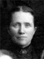
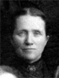

|
Isabella Fielding Burton
Born 26 DEC 1856 Kaysville,Davis,Utah,USA
Died 26 OCT 1920 Ogden, UT
Married Frederick Foulger 21 Dec. 1874
The 1st child of William Walton Burton and Rachel Fielding |
 |
Hannah Fielding Burton
Born 14 JAN 1859 Salt Lake City,Salt Lake,Utah,USA
Died 24 JAN 1944 Ogden, UT
Married Moroni Strubell Poulter 5 Sep. 1878
The 2nd child of William Walton Burton and Rachel Fielding |
 |
Joseph Fielding Burton
Born 3 MAR 1861 Slatersville,Weber,Utah,USA
Died 14 FEB 1924 Salt Lake City, UT
Married Mary Ann Elizabeth Driver 31 Mar. 1886
The 3rd child of William Walton Burton and Rachel Fielding |
 |
William Fielding Burton
Born 10 NOV 1862 Kaysville,Davis,Utah,USA
Died 22 AUG 1923 OGDEN,Weber,Utah,USA
The 4th child of William Walton Burton and Rachel Fielding |
|
Rachel Burton
Born 13 FEB 1865 OGDEN,Weber,Utah,USA
Died 4 AUG 1960 Logan, UT
Married
Zachariah Ballantyne 26 FEB 1886
The 5th child of William Walton Burton and Rachel Fielding
|
|
Sarah Ellen Burton
Born 14 DEC 1866 OGDEN,Weber,Utah,USA
Died 8 JUL 1965 Ogden, UT
Married Frederick Foulger 26 Feb 1886
The 6th child of William Walton Burton and Rachel Fielding |
 |
James Fielding Burton
Born 18 MAY 1868 OGDEN,Weber,Utah,USA
Died 17 JAN 1924 OGDEN,UT
Married Grace Kittle Koerner 6 Apr 1913
The 7th child of William Walton Burton and Rachel Fielding |
* |
Mary Eliza Burton
Born 4 JUL 1870 OGDEN,Weber,Utah,USA
Died 11 JUN 1871
The 8th child of William Walton Burton and Rachel Fielding |
|
Martha Burton
Born 11 OCT 1872 OGDEN,Weber,Utah,USA
Died 21 FEB 1948 Ogden, UT
Married Isaac Martin Cooley 12 Sep. 1900
The 9th child of William Walton Burton and Rachel Fielding |
|
Christopher Fielding Burton
Born 4 JUN 1875 OGDEN,Weber,Utah,USA
Died 9 JUN 1965 Logan, UT
Married Miriam Van Orden 19 Apr. 1906
The 10th child of William Walton Burton and Rachel Fielding |
|
Robert Ibbotson Burton
Born 9 FEB 1879 OGDEN,Weber,Utah,USA
Died 24 OCT 1967 Salt Lake City, UT
Married Letitia Jane Richards 2 Dec. 1903
The 11th child of William Walton Burton and Rachel Fielding |
* |
Vilate Pearl Burton
Born 20 JUN 1881 OGDEN,Weber,Utah,USA
Died 4 DEC 1918 Ogden, UT
The12th child of William Walton Burton and Rachel Fielding |
* |
Julina May Burton
Born 21 OCT 1884 OGDEN,Weber,Utah,USA
Died 18 FEB 1888 Ogden, UT
The 13th child of William Walton Burton and Rachel Fielding |

 symbol is a link to a history, and the chart
symbol is a link to a history, and the chart  symbol is a link to a family group chart.)
symbol is a link to a family group chart.) 
